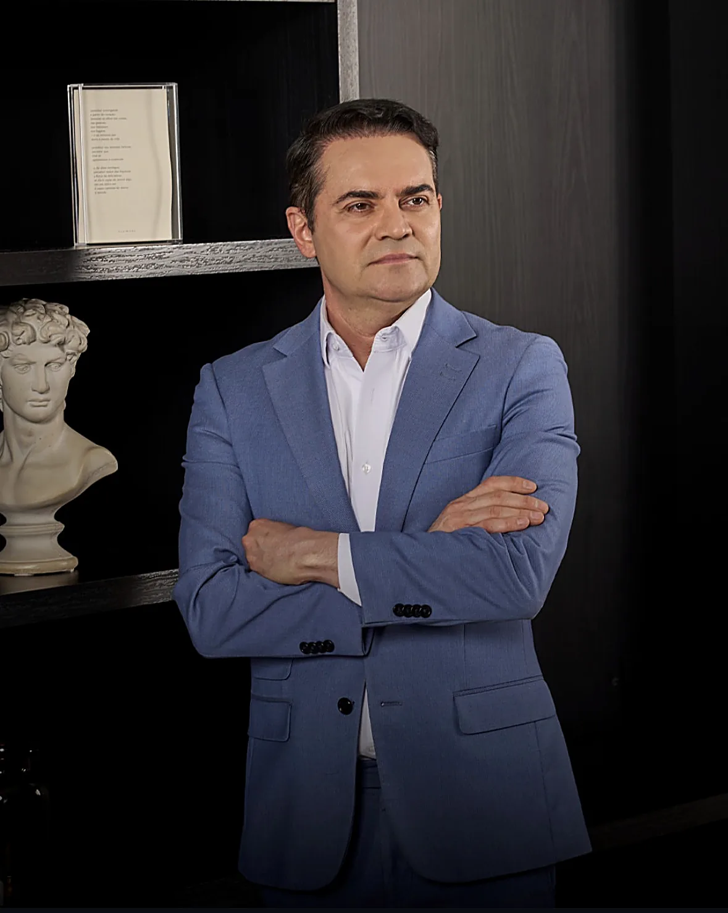
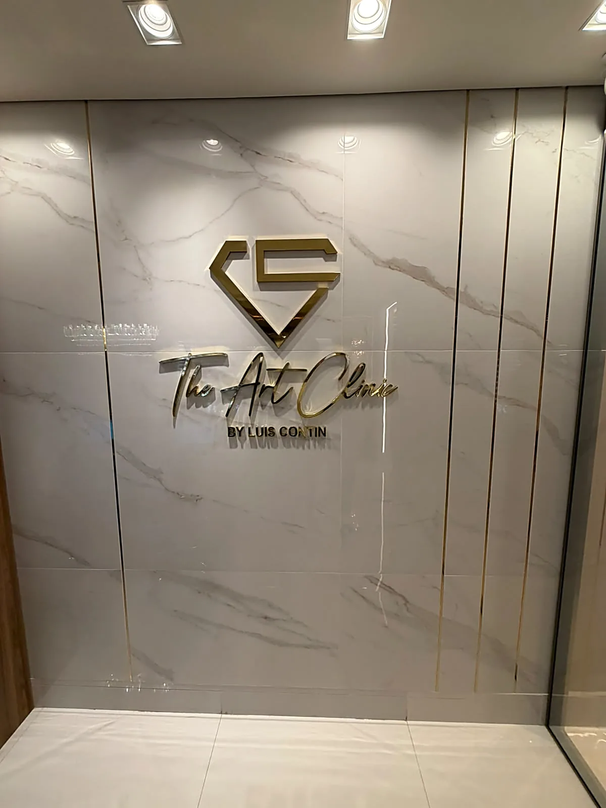
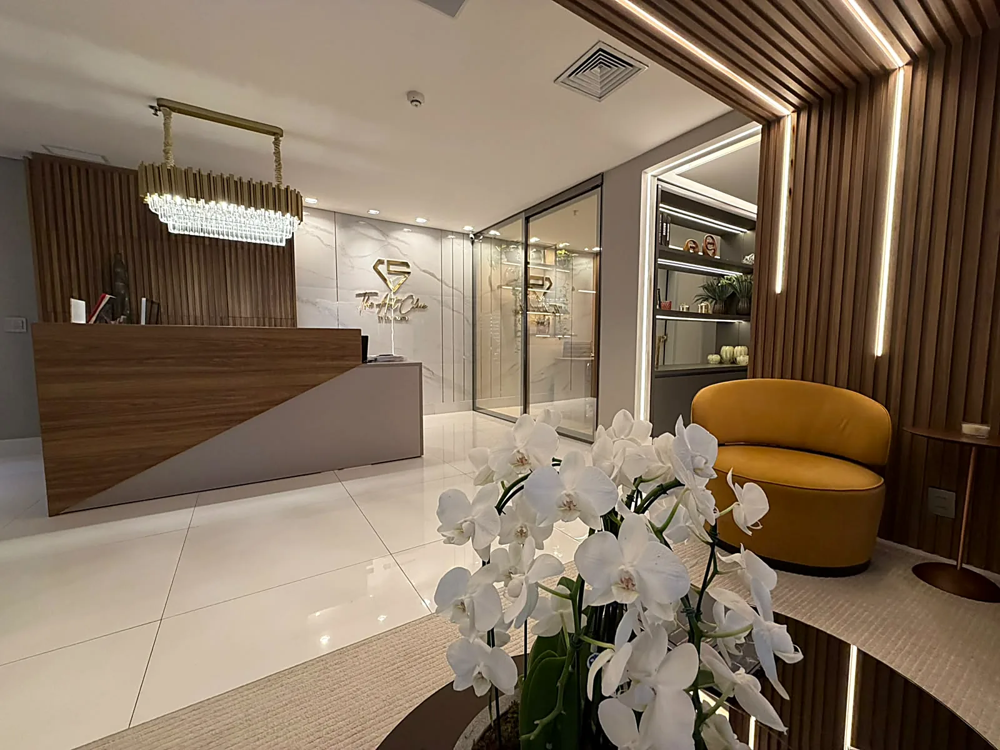
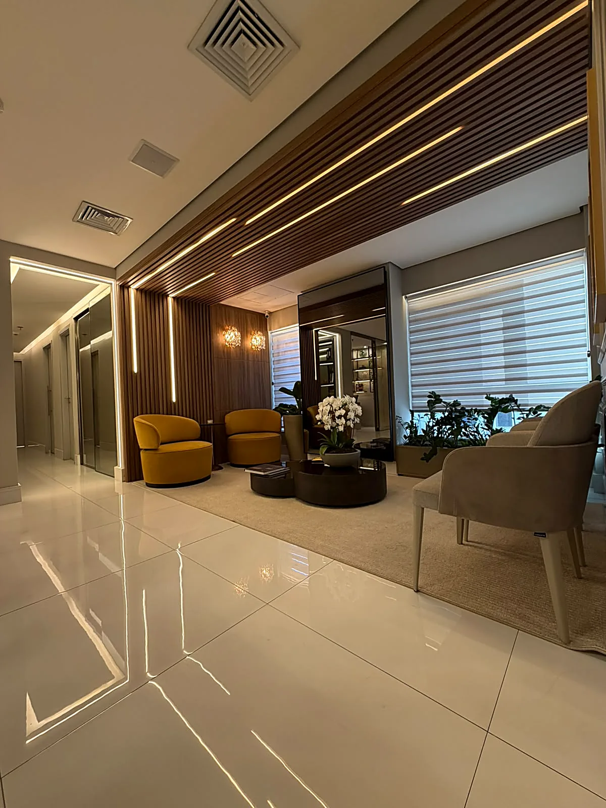
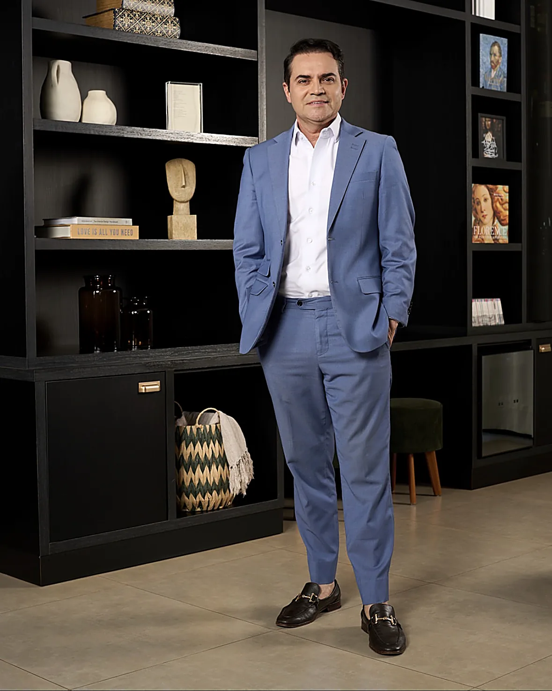

Abdominoplastia
Cirurgia que trata o excesso de pele e a flacidez abdominal, com reposicionamento da musculatura quando indicado — frequente após gestações ou grandes variações de peso.
Cirurgia Plástica · Alphaville, São Paulo
Dr. Luis Contin dedica-se à cirurgia plástica de alta precisão, com especialização em LipoHD. Todas as cirurgias são realizadas exclusivamente em ambiente hospitalar.
Precisão técnica · Sensibilidade estética
Cada procedimento é planejado individualmente — respeitando a anatomia, a proporção e a naturalidade de cada corpo.


São Paulo · Boston · Barcelona
Cirurgião plástico com formação no Brasil e no exterior, o Dr. Luis Contin construiu sua trajetória unindo rigor técnico e olhar estético — a convicção de que segurança e naturalidade caminham juntas.
Alameda Grajaú, 98 — Alphaville
Um espaço projetado para acolher: consultas, avaliações e acompanhamento pós-operatório em ambiente reservado, a minutos do Hospital Albert Einstein — Unidade Alphaville.





Procedimentos
A LipoHD é uma técnica de lipoaspiração que trabalha o contorno corporal com maior detalhamento, buscando definição muscular de aspecto natural. A indicação depende de avaliação individual: biotipo, qualidade da pele, histórico de saúde e expectativas realistas fazem parte da análise em consulta.
Todo procedimento cirúrgico possui indicações, contraindicações, período de recuperação e riscos, que são detalhadamente esclarecidos em consulta. Os resultados variam de pessoa para pessoa.

Cirurgia que trata o excesso de pele e a flacidez abdominal, com reposicionamento da musculatura quando indicado — frequente após gestações ou grandes variações de peso.
Aumento, redução ou levantamento mamário, planejados a partir da anatomia e da proporção de cada paciente, com escolha de técnica definida em consulta.
Procedimentos que buscam a harmonia e a naturalidade dos traços, respeitando a expressão e a individualidade de cada rosto.
Livro · Editora Comunnicar
As maiores dúvidas sobre cirurgia plástica, respondidas com clareza — antes de qualquer decisão.
Em "Cirurgia Plástica — A Arte no Corpo", o Dr. Luis Contin responde de forma clara e concisa às dúvidas mais frequentes sobre os diversos tipos de cirurgia plástica — um compromisso com a informação de qualidade e a decisão consciente do paciente.
FALTA · link de compra ou download do livro
Consultas em Alphaville
A avaliação individual é o primeiro passo de qualquer procedimento. Agende diretamente pelo WhatsApp com a equipe da clínica.
Agendar pelo WhatsAppFALTA · número oficial de WhatsApp (link atual é placeholder)